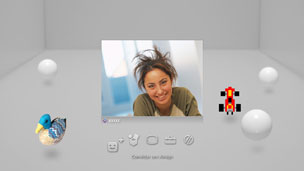

Amigos > Conversação de voz / vídeo > Iniciar ou abandonar uma conversação de voz / vídeo
Iniciar ou abandonar uma conversação de voz / vídeo
Para utilizar esta função, poderá ter de actualizar o software de sistema.
Pode estabelecer conversações de voz / vídeo com pessoas da sua lista de Amigos. Para estabelecer conversações de voz, é necessário um dispositivo de entrada / saída de áudio (tal como um auscultador, vendido em separado). Para estabelecer conversações de vídeo, também é necessário uma câmara USB (vendida em separado).
Iniciar conversação de voz / vídeo
1. |
Seleccione |
|---|---|
2. |
Seleccione |
3. |
Seleccione |
4. |
Escreva uma mensagem e seleccione [Enviar].  Se a pessoa aceitar o convite, a sua imagem aparece e começa a conversação de voz/vídeo. |
 (Amigos) >
(Amigos) >  (Iniciar Nova Conversação).
(Iniciar Nova Conversação). (Conversação de Voz/Vídeo).
(Conversação de Voz/Vídeo). (Convidar um Amigo) no menu que aparece no ecrã.
(Convidar um Amigo) no menu que aparece no ecrã.Notas
- O sistema PS3™ suporta conversação de voz / vídeo. Outras opções de conversação adicionais, tal como conversação no jogo, podem ser disponibilizadas através de software de jogo. Para mais detalhes, consulte as instruções fornecidas com o software utilizado.
- Tem de estar registado na PSNSM para estabelecer conversações.
- Apesar de ser possível convidar diversos amigos para a conversação, só aparecem os avatares dos cinco primeiros amigos que seleccionou no ecrã.
- Podem estar até seis pessoas numa sala de conversação.
- A funcionalidade de conversação de voz / vídeo não pode ser utilizada se houver restrições definidas à sua utilização. Para mais informações sobre definições de controlo parental, consulte [Sobre o menu XMB™] > [Utilizar as definições de controlo parental] neste manual.
- Pode utilizar auscultadores USB / auscultadores Bluetooth® / câmaras USB EyeToy™ / PlayStation®Eye / câmaras USB compatíveis com classe de vídeo USB (UVC) no sistema PS3™.
- Quando ligar uma câmara USB através de um hub USB, utilize um hub que suporte USB 2.0. Se for utilizado um hub que não suporte USB 2.0, pode ocorrer degradação da imagem ou a imagem pode não ser apresentada.
- Para mais informações sobre os periféricos suportados e as instruções de utilização, contacte o vendedor onde os periféricos são vendidos.
Sair da sala de conversação (abandonar a conversação de voz / vídeo)
Durante uma conversação, seleccione  (Sair) no painel de controlo das opções.
(Sair) no painel de controlo das opções.
Nota
Se a pessoa que iniciou a conversação de voz/vídeo sair, a sala de conversação fecha.